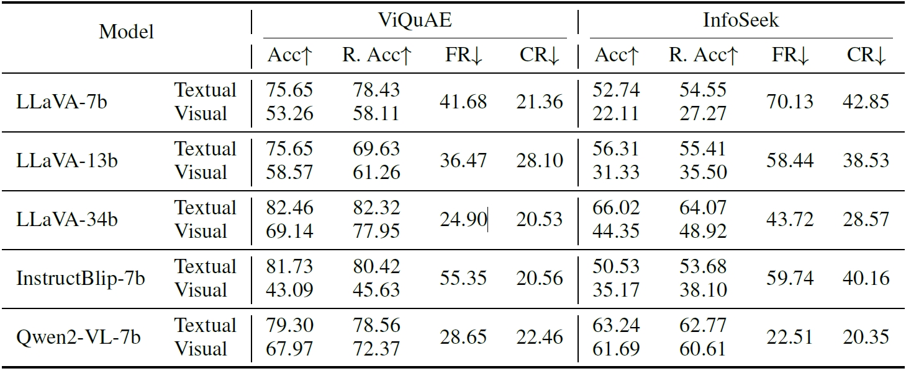

While Large Vision-Language Models (LVLMs) have demonstrated impressive capabilities for capturing and reasoning over multimodal inputs, they are prone to parametric knowledge conflicts, which arise from inconsistencies of represented knowledge between their vision and language components. In this paper, we formally define the problem of cross-modality parametric knowledge conflict and present a systematic approach to detect, interpret, and mitigate them. We introduce a pipeline that identifies conflicts between visual and textual answers, showing a persistently high conflict rate across modalities in recent LVLMs regardless of the model size. We further investigate how these conflicts interfere with the inference process and propose a contrastive metric to discern the conflicting samples from the others. Building on these insights, we develop a novel dynamic contrastive decoding method that removes undesirable logits inferred from the less confident modality components based on answer confidence. For models that do not provide logits, we also introduce two prompt-based strategies to mitigate the conflicts.
For a question towards a named entity, we present the entity in both textual and visual form. For the textual form, we add a indicator prompt before the question, informing the model of the entity. For the visual form, we use an image depicting the entity. Then, we elicit the textual and visual answer from the model and compare to each other.
There is a clear trend that as the model size increases, both the FR and the ΔAcc between textual and visual answers decrease. However, the lower bound of the knowledge conflict rate (CR) remains consistently high. This suggests that although scaling up models can enhance their overall performance and consistency, it does not resolve cross-modality knowledge conflicts.
Confidence alone is not a reliable indicator of answer correctness when confronted with conflict samples. The proposed contrastive metric effectively distinguishes conflicting samples from consistent ones, suggesting that cross-modality knowledge conflicts tend to exacerbate the information gap between tokens across different modalities, regardless of the model size.
To mitigate cross-modality knowledge conflicts, we propose a dynamic contrastive decoding (DCD) method. For models that do not provide access to logits, we provide two prompting strategies.
Dynamic contrastive decoding (DCD) brings universal improvements against the baselines. The performance of prompting-based strategies varies depending on the model size. Larger models are better at understanding and processing the information in the designed prompts.
@article{zhu2024unraveling,
title={Unraveling Cross-Modality Knowledge Conflict in Large Vision-Language Models},
author={Zhu, Tinghui and Liu, Qin and Wang, Fei and Tu, Zhengzhong and Chen, Muhao},
journal={arXiv preprint arXiv:2410.03659},
year={2024}
}